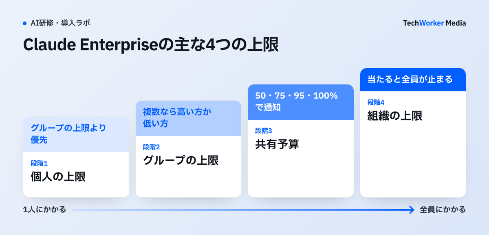
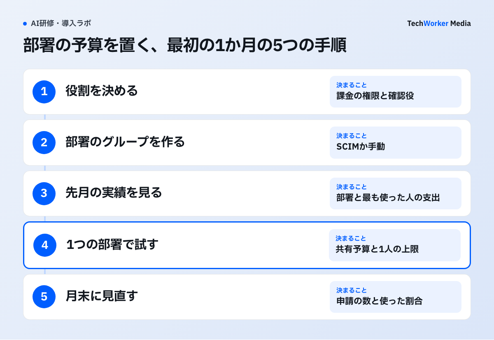

Claude Enterpriseでは、2026年10月28日から、部署などのグループごとに月の共有予算（pooled budget）を置けるようになりました。
- 部署の予算：グループに月1つの予算を置き、メンバー全員がそこから使います。使い切ると、ほかに使える共有予算が無いメンバーの利用は止まります。
- 通知：予算の50%・75%・95%・100%で、課金（Billing）の権限を持つ全員にメールが届きます。
- 集計：11月6日からはプロジェクトにコストコードを付けて、案件や部門ごとの支出を集計できます（ベータ）。
Anthropicの発表とヘルプセンターの記事（2026年11月18日確認）をもとに、上限どうしの関係、設定の場所、稟議に書くことをまとめます。Teamプランで使える範囲も後半で整理します。
Claude Enterpriseの共有予算とは、何ですか？
グループに月1つの予算を置き、メンバー全員がそこから使う仕組みです。2026年10月28日に、Enterprise向けに一般提供になりました。
Anthropicは2026年10月28日の発表で、共有予算の狙いを次のように書いています。
原文“Pooled group budgets give a group one shared monthly budget, so people who use Claude heavily are less likely to hit an individual limit early in the month while others leave budget unspent.”
日本語訳共有予算は、グループに月1つの共有の予算を与えます。よく使う人が月の早いうちに個人の上限に当たり、ほかの人の予算が余る、ということが起きにくくなります。
同じ発表で、スマートレポート（利用レポート）とアプリ内アンケートも一般提供になりました。3つとも対象はClaude Enterpriseです。
グループごとの上限はこれまでも置けました。グループの上限はメンバー1人ずつに同じ額をかける設定です。共有予算はそれに加えて、グループ全体で1つの額を置きます。
よく使う人の上限は高めにしておき、部署全体の額で抑える、という使い方ができます。ヘルプは1人あたりの上限を「共有予算÷人数」にすると、共有の意味が無くなると書いています。
上限は何種類あり、どれが先に効きますか？
主な上限は組織・個人・グループ・共有予算の4つです。1回の利用は本人の上限と共有予算の両方に数えられ、先に尽きた方で止まります。

| 上限の種類 | 何にかかるか | 設定する場所 | 注意 |
|---|---|---|---|
| 組織の上限 | 全員・全製品の合計 | Organization settings ＞ Usage | 当たると全員が同時に止まる |
| 個人の上限 | その人だけ | Usage のメンバーごとの上限 | グループの上限より優先される |
| グループの上限 | メンバー1人ずつに同じ額 | Usage ＞ Spend limits ＞ By group/tier | 複数のグループに入る人は、高い方か低い方を選ぶ |
| 共有予算 | グループ全体で1つの額 | 同じ行の「Edit limit and budget」 | 作った後の利用だけを数え、毎月リセット |
出典：Claude ヘルプセンター「Manage groups and group spend limits on Enterprise plans」「Manage pooled group budgets on Enterprise plans」「Claude Enterprise consumption guide」（2026年11月18日確認）
組織の上限について、Anthropicの消費ガイドは全員と全製品の利用をまとめて抑える上限と説明しています。当たると全員が同時に止まるため、まずグループと個人の上限から始めるよう勧めています。
個人の上限を置いた人には、その個人の上限が優先して使われます。複数のグループに入っている人は、「Member limit from groups」の設定で、高い方と低い方のどちらを使うかを決めます。
上限ちょうどで止まるとは限りません。消費ガイドには止まる前に少し超えることがあると書かれています。
Slackのチャンネルで使うClaude（Claude Tag、ベータ）は、組織の残高から引かれます。個人とグループの上限はかからないため、専用の上限の画面で別に抑えます。
席と利用量の料金はClaudeの法人契約と料金にまとめています。Claudeを含む主要4社の料金比較表と、稟議書・社内利用ルールの雛形は、下の枠から受け取れます。
部署の共有予算は、どこでどう設定しますか？
「Organization settings ＞ Usage」の「By group/tier」で、部署のグループの行から設定します。先にグループを作っておく必要があります。
席に利用量が含まれる契約（Standard・Premiumの席）では、先に使用量クレジットを有効にします。有効にするまで、上限の表は出ません。
設定できるのは、Primary Owner、Owner、課金（Billing）の権限を「Can manage」にしたカスタムの役割です。グループは手動で作るか、SCIMで社内のIdP（ID管理の仕組み）から同期します。
- Organization settings ＞ Groups で、部署のグループがあるかを確かめます。
- Organization settings ＞ Usage を開き、Spend limits の「By group/tier」タブを選びます。
- 部署の行のメニューから「Edit limit and budget」を選びます。
- 「Monthly pooled budget」で「Set amount」を選びます。直近の利用から出した額が入っているので、必要なら直します。
- 「Member monthly limit」で1人あたりの上限を決め、「Save」を押します。
ヘルプは最初の額を先月の実際の支出から決めるよう勧めています。目安は、共有予算が部署の先月の支出の約3倍、1人あたりの上限が最も使った人の約3倍です。
ヘルプの例では、部署の先月の支出が1,450ドル、最も使った人が310ドルです。共有予算は4,350ドル、1人あたりの上限は約950ドルになります。
1人が2つ以上のグループに入っているときは、既定で額の大きい共有予算から使われます。順番は「Pooled budget priority」で変えられます。
止めたいときは、額を0ドルにすると凍結になります。「Paused」を選ぶと、額を残したまま止められます。
注意点が2つあります。課金の権限は組織全体にかかるので、1つの部署の予算を変えられる人は、全部の部署の予算を変えられます。また、共有予算はAdmin APIからはまだ操作できず、管理画面だけで設定します。
予算に近づくと、誰に何が届きますか？
50%・75%・95%・100%で、課金の権限を持つ全員にメールが届きます。利用者には、上限に当たったときだけ「Request more」の案内が出ます。
原文“When a pooled budget reaches 50%, 75%, 95%, and 100% of its monthly amount, everyone with the Billing permission gets an email, and a notice for the group appears at the top of Organization settings and on the Usage page.”
日本語訳共有予算が月の額の50%、75%、95%、100%に達すると、課金の権限を持つ全員にメールが届きます。Organization settingsの上部とUsageのページにも、そのグループの通知が出ます。
Usageのページの「Pooled budget」の列では、部署ごとに使った割合が棒で見えます。棒は75%で黄色、90%で赤に変わります。
利用者の画面は本人の上限に当たるか、使える共有予算がすべて尽きるまで変わりません。尽きると、入力欄に「Request more」のボタンが出ます。申請は管理者の「Review requests」に届きます。利用者からはグループの名前も予算の額も見えません。
額が合っているかの見方も、ヘルプにあります。月の20日より前に75%を使っていたら、50%の引き上げを考えます。申請が続くときは、1人あたりの上限を上げます。
席に利用量が含まれる契約（Standard・Premiumの席）では、共有予算は席を超えた分の使用量クレジットにだけかかります。予算が尽きても、席に含まれる分は使えます。
コストコードで、案件や部門ごとの支出をどう集計しますか？
プロジェクトに「cost_code」などのタグと値を付けると、Usageの「Spend by project」でタグごとに集計できます。2026年11月6日からのベータで、対象はEnterpriseです。
タグは集計の分類（例：cost_code）と、コードの値（例：CC-1042）の2つで作ります。タグを作るのはOwner以上で、値を付けるのはプロジェクトを編集できる人です。1つのプロジェクトに16個までタグを付けられます。
使えない組織もあります。HIPAAの構成、顧客管理の暗号鍵（CMEK）、ゼロデータ保持（ZDR）、最小限のデータ保持を使う組織は対象外です。データを米国の外に保存する組織と、Claude Desktopを自社のモデル提供元に通す組織も対象外です。保存先を指定している会社は先に確かめます。
| 使う場所 | プロジェクトごとに集計されるか |
|---|---|
| プロジェクトの中のチャット・Cowork | される |
| 手元のパソコンのCoworkのタスク | される（Claude Desktop 3.6556.1以降で、プロジェクトを1つ選ぶ） |
| ターミナル・デスクトップのClaude Code | Claude Code 2.1.305以降（またはDesktop 3.6556.1以降）で、設定ファイルでプロジェクトを指定すれば、される |
| Web版のClaude Code、Claude for Office、Claude in Chrome、Slack・Teams、API、APIキーやゲートウェイ経由のClaude Code | されない |
出典：Claude ヘルプセンター「Track spend by cost code with project tags」（2026年11月18日確認）
Claude Codeには、プロジェクトを選ぶ画面がありません。利用者が .claude/settings.json に "attributionProject" とプロジェクトのIDを書きます。書かないと集計されず、警告も出ません。開発部門で使うときは、配る設定ファイルに入れておきます。
数字を読むときの注意は次の4つです。
- タグが効くまで約2時間かかります。仕事を始める前に付けます。
- プロジェクトの外の利用は「Not in a project」にまとまります。
- 金額は割引の後、クレジットの適用の前の額で、請求書と合わないことがあります。
- 席に含まれる利用は数えません。
タグの名前と値は、組織の全員に見えます。顧客名や公開前の案件名は値に入れず、社内の番号を使います。
このベータには、タグごとの上限がありません。止めるのは共有予算、集計はコストコード、と役割を分けて使います。
利用レポート（スマートレポート）では、何が分かりますか？
部署の会話の一部をClaudeが読み、仕事の種類ごとの定価での費用、作った物、つまずいた所をまとめます。月10本まで無料で、既定はオフです。
スマートレポートは、チーム、最大28日の期間、製品（チャット、Claude Code、Cowork）を選んで作ります。結果は通常、数時間で届きます。オンにできるのはPrimary OwnerとOwnerです。作って見られるのは、Primary Owner、Owner、Admin、分析の閲覧の権限を持つカスタムの役割です。
CMEK、HIPAAの構成、自社のクラウドで推論するハイブリッド構成の組織では使えません。Claude CodeでZDRを使う組織では、Claude Codeが集計から外れます。
レポートには、仕事の流れ（workstream）ごとの定価での費用、成果物の種類ごとの1回あたりの費用、よくあるつまずきが並びます。スキルにするとよい繰り返しの仕事も挙がります。上限で仕事が止まっている人も示されます。課金の権限があり、利用者の名前を表示する設定で見ていれば、レポートから上限を上げられます。
原文“They aren't designed and should not be used for evaluating individual performance or making employment decisions.”
日本語訳スマートレポートは、個人の成果の評価や雇用の判断のために作られておらず、そのために使うべきではありません。
レポートの中の名前は既定で「User」に置き換わります。名前を出せるようにする設定は別にあり、名前を表示するたびに記録が残ります。
数字だけが要るときは、Analyticsの「Export spend report」で、人×モデルごとのCSVを最大90日分書き出せます。EnterpriseのAdminは、支出の欄を除く分析を見られます。
アプリ内アンケートでは既定で4つの質問を利用者に出せます。「明日Claudeが使えなくなったら、何が止まるか」など、価値を聞く質問です。回答はCSVで書き出せます。
Teamプランでは、どこまで管理できますか？
組織全体の月の上限は置けますが、グループと共有予算はEnterpriseだけの機能です。利用者ごとの上限は使えない組織もあります。
Teamでは、Ownerが使用量クレジット（席の利用枠を超えた分を払う仕組み）を有効にし、組織全体の月の上限を置きます。利用者ごとの上限はすべてのTeamの組織にあるわけではありません。Usageの画面に「Spend by org member」と出る組織では使えない、とヘルプは書いています。
| 機能 | Team | Enterprise |
|---|---|---|
| 組織全体の上限 | 使用量クレジットを有効にすると置ける | 置ける |
| 利用者ごとの上限 | 組織によっては置けない | 置ける |
| グループの上限・共有予算 | なし | あり |
| コストコード | なし | あり（ベータ） |
| スマートレポート | なし | あり（既定はオフ） |
| 分析を見られる役割 | Owner・Primary Owner | Owner・Primary Owner・Admin（Adminは支出を除く） |
出典：Claude ヘルプセンター「Manage usage credits for Team and seat-based Enterprise plans」「View usage analytics for Team and Enterprise plans」ほか（2026年11月18日確認）
部署ごとに予算を分けたい会社は、Enterpriseの条件（1席月20ドル・年払い、最低20席、利用量はAPIの料金で別に請求）を前提に比べます。Gemini Enterpriseの上限の仕組みは、Gemini Enterpriseの利用上限と予算で比べています。
稟議と社内の決まりに、何を書きますか？
席の年額と、部署ごとの共有予算の合計を分けて書きます。決まりには、誰が予算を変えられるかと、レポートを人の評価に使わないことを入れます。
ここからはTechWorkerの提案です。公式の仕組みから、稟議に書く項目を挙げます。
費用は2行に分けます。席の年額は「20ドル×席数×12か月」で、50席なら年12,000ドルです。利用量は部署ごとの共有予算の月額を足して12倍します。3部署で月2,000ドル・3,000ドル・5,000ドルなら、月10,000ドル、年120,000ドルが上限の目安です（額は仮の例）。
共有予算の目安は先月の実績の約3倍なので、上限の合計は実際の支出より大きくなります。稟議では「見込みの額」と「止める上限の額」を別の行に書きます。グループに入っていない人の利用は共有予算にかからないので、組織の上限で抑えます。Slackのチャンネルの利用（Claude Tag）は、専用のClaude Tagの上限で抑えます。
社内の決まりには次の5つを書きます。
- 予算を変えられる人：課金の権限を持つ人の名前を書きます。1つの部署の予算を変えられる人は、全部の部署を変えられる点も書きます。
- 申請の受け方：「Review requests」を誰が見て、何日以内に答えるかを決めます。
- 部署の確認役：分析の閲覧の権限を持つカスタムの役割を作り、部署ごとに1人置きます。消費ガイドが勧める形です。閲覧の範囲は組織全体に及びます。
- レポートの使い方：スマートレポートは導入の判断に使い、個人の評価に使わないと書きます。名前の表示を許すかも決めます。
- タグの付け方：コストコードの値に顧客名を入れないと決めます。Claude Codeの設定ファイルに、プロジェクトのIDを入れて配ります。
トークンの使い方と費用を作業ごとに記録する考え方は、トークンマネジメントの記事で扱っています。
最初の1か月は、どの順で進めますか？
役割を決め、部署のグループを作り、1つの部署で共有予算を試してから広げます。

- 役割を決める：課金の権限を持つ人と、部署の確認役を決めます。
- グループを作る：SCIMで同期するか、手動で部署のグループを作ります。
- 先月の実績を見る：Analyticsで、部署の支出と、最も使った人の支出を確かめます。
- 1つの部署で試す：持ち主がはっきりした部署に、共有予算と1人あたりの上限を置きます。
- 月末に見直す：申請の数と使った割合を見て額を直し、ほかの部署へ広げます。
ヘルプも、最初は持ち主がはっきりした1つのチームから始めるよう勧めています。消費ガイドには、Claude CodeとCoworkは普通のチャットよりかなり多くのトークンを使う、とも書かれています。使える人を部署ごとに段階的に広げると、予算の見直しもしやすくなります。
よくある質問
使用量課金のEnterpriseでは、ほかに使える共有予算が無いメンバーの利用が止まります。席に利用量が含まれる契約では、席の分は使い続けられ、使用量クレジットの分だけが止まります。管理者が額を上げると、すぐに再開できます。
置けません。グループと共有予算はEnterpriseの機能です。Teamで置けるのは組織全体の月の上限で、利用者ごとの上限は使える組織と使えない組織があります。
ターミナルかデスクトップのClaude Codeで、利用者が設定ファイルにプロジェクトのIDを書いた場合は集計できます。Web版のClaude Codeと、Amazon BedrockやGoogle Cloud経由の利用は対象外です。
公式のヘルプは個人の成果の評価や雇用の判断に使うべきではないと書いています。名前は既定で伏せられ、名前を表示すると記録が残ります。
2026年11月18日に確かめた時点では、変えられません。共有予算はAdmin APIに対応しておらず、管理画面で設定します。タグの値の追加、プロジェクトへのタグの設定、支出の取得は、ベータのAPIで行えます。タグそのものは管理画面で作ります。
次の一歩は何から始めればよいですか？
課金の権限を持つ人を決め、先月の部署ごとの支出を見ることから始めます。
- Analyticsで、部署ごとの先月の支出と、最も使った人の支出を確かめます。
- 1つの部署に先月の約3倍で共有予算を置き、50%の通知が届くかを確かめます。
- 稟議に、席の年額と共有予算の合計を分けて書きます。
TechWorkerではClaudeの研修を、受講者の実際の業務1本から組みます。30分の点検は画面共有で無料で行い、IDやパスワードは預かりません。30日後に、使った人の割合と1件の時間を測って報告します。検討段階のご相談だけでも歓迎です。
出典と確認範囲
確認日：2026年11月18日。管理画面の実際の表示と、共有予算が尽きたときの動きは、TechWorkerの環境では確かめていません。機能と提供の条件は変わるため、設定の時点で公式情報を確認してください。稟議の額の例は仮の数字で、社内の決まりの5項目はTechWorkerの提案です。
- Anthropic「Smart reports, surveys, and pooled group budgets for Claude Enterprise」（2026年10月28日）
- Claude ヘルプセンター「Manage pooled group budgets on Enterprise plans」
- Claude ヘルプセンター「Manage groups and group spend limits on Enterprise plans」
- Claude ヘルプセンター「Claude Enterprise consumption guide」
- Claude ヘルプセンター「Track spend by cost code with project tags」
- Claude ヘルプセンター「Get started with smart reports」
- Claude ヘルプセンター「View usage analytics for Team and Enterprise plans」
- Claude ヘルプセンター「Manage usage credits for Team and seat-based Enterprise plans」
- Claude ヘルプセンター「Release notes」（2026年11月6日の項）
- Claude「Pricing」